Baileys
“It's treat o'clock!” brand activation for Baileys. I helped build a visually engaging Treat Bar activation that invites people to indulge in the sweet pleasures of Baileys.

Baileys is a renowned Irish cream liqueur brand known for its smooth blend of cream and whiskey, a luxurious indulgence for adults after a sweet treat.
I worked on the brand activation with VMLY&R Hungary, a creative agency that combines strategic thinking with innovative design to deliver impactful brand experiences.
A cohesive identity across every format.
One of the main challenges was crafting a cohesive visual identity that resonated with the target audience while clearly conveying the activation message. Balancing creativity with practical design was essential, so the materials captured attention and drove engagement.
Adapting the designs for various formats and venues also took careful consideration to keep everything consistent across all platforms.
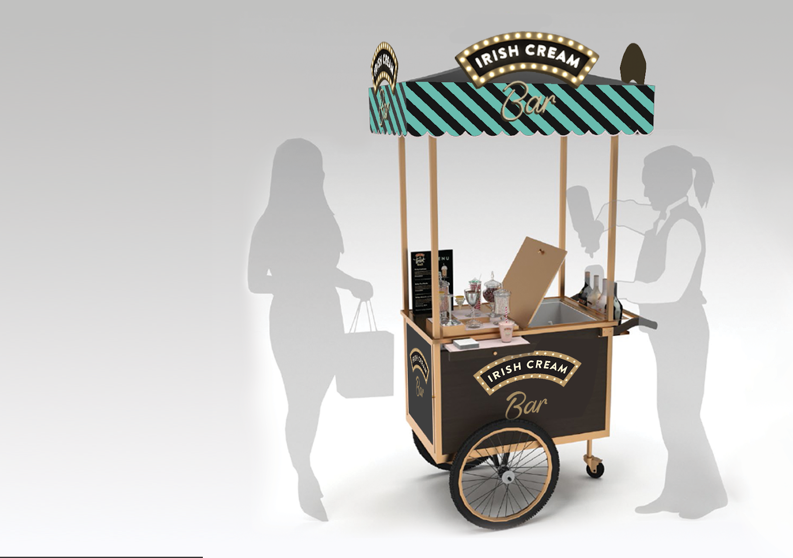
“It's treat o'clock!”
The campaign's core concept, “It's treat o'clock! There is always time for some mmmm!”, guided the creative direction. We wanted a visually engaging brand experience that encourages people to indulge in the sweet pleasures of Baileys.
To maximise impact, we targeted high-traffic locations like shopping malls and airports, and explored partnerships with on-trade venues, positioning the Treat Bars as must-visit destinations for everyday indulgence.
On the design side, I contributed a range of assets to build awareness and engage the audience: new design patterns, a refreshed logo, and eye-catching flyers, shelf wobblers and bottle neck-hangers, alongside social media and banner designs.
Guiding shoppers to the Treat Bar.
The Treat Bars were temporary locations set up to promote Baileys inside shopping malls and airports. So the activation was built around the consumer journey through those spaces, a piece of BTL designed to carry people from first sight to the bar itself.
The path was mapped in stages: OOH, social, digital and PR to generate trial before arrival; mirror stickers in the mall's elevators and floor stickers through the building to navigate people toward the bar; then table tents, A-stands at the food court, menu cards, cups and the bar display to inspire indulgence at the destination.
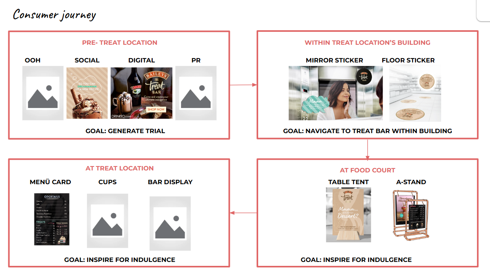
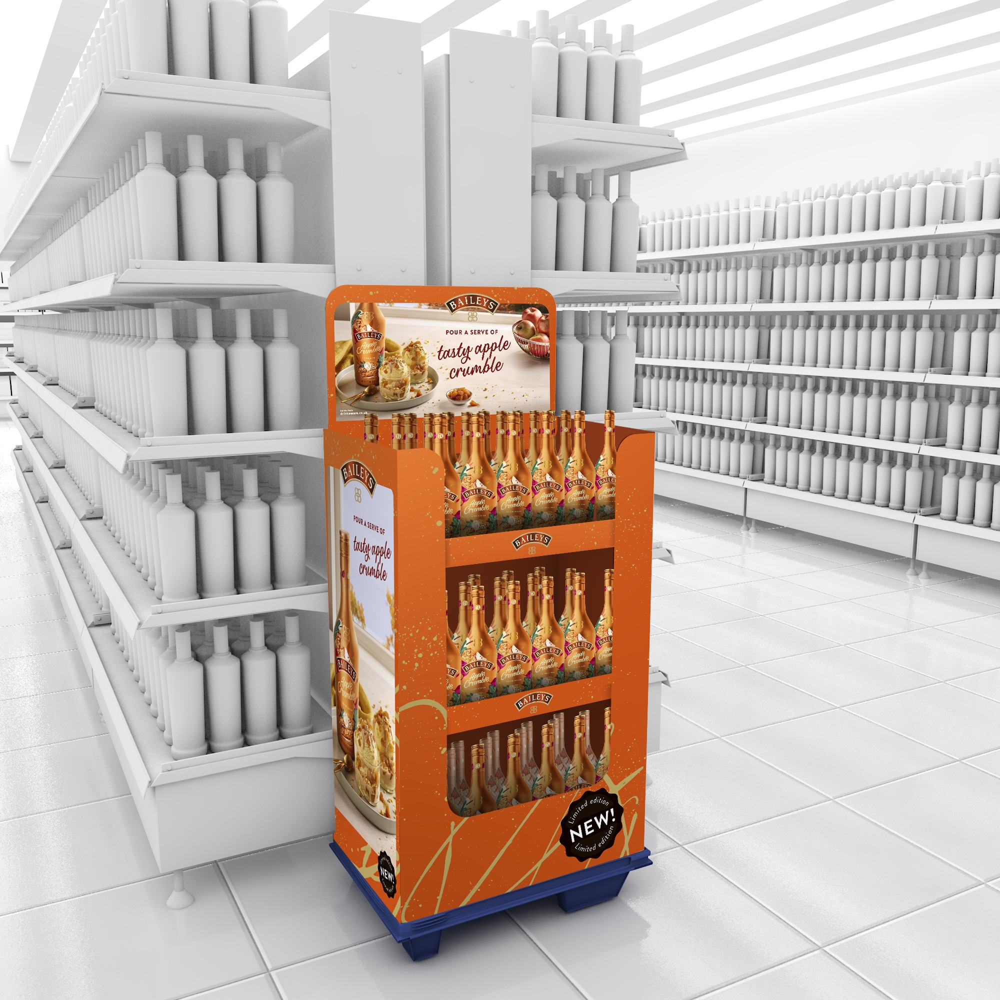
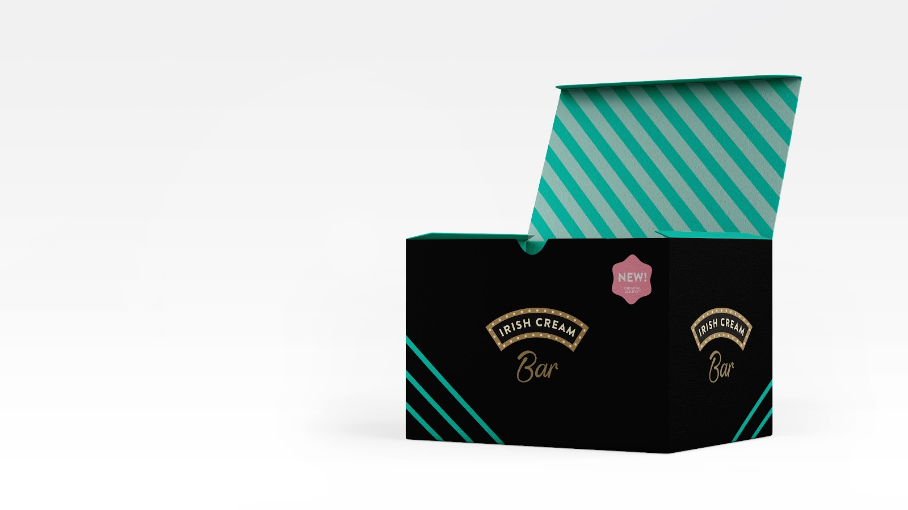
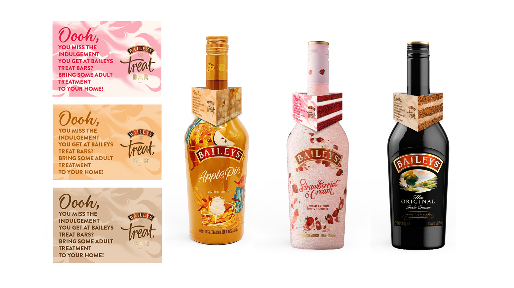
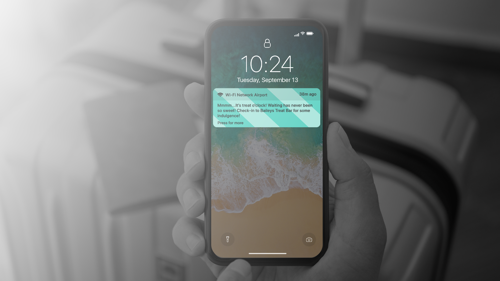
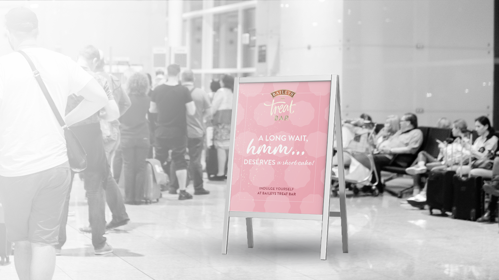
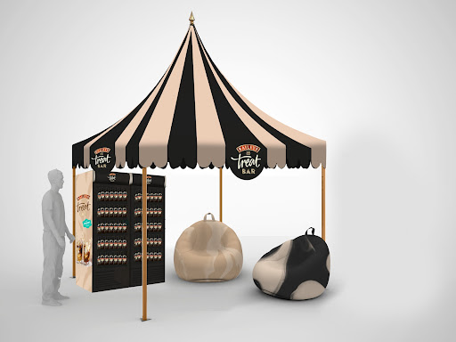
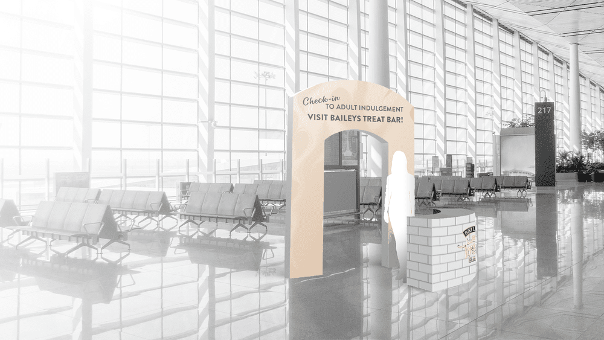
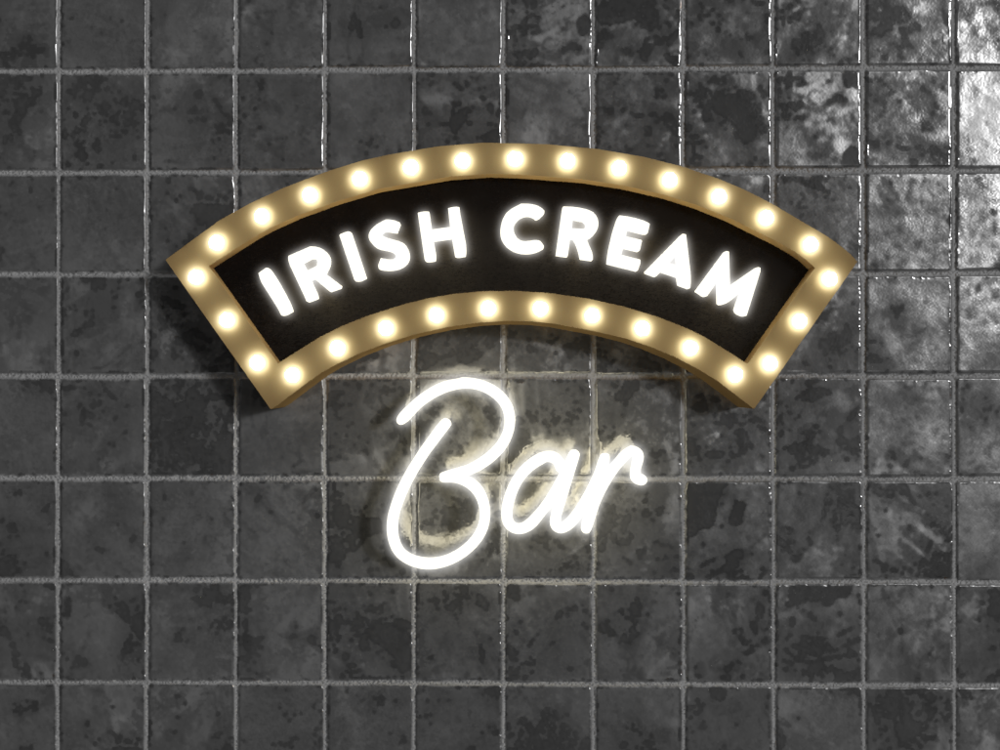
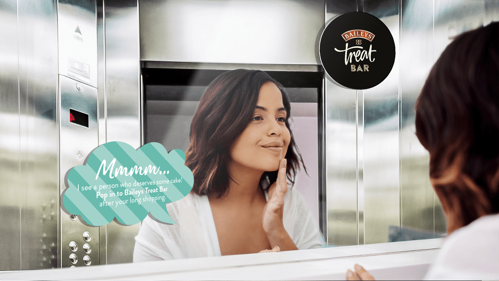
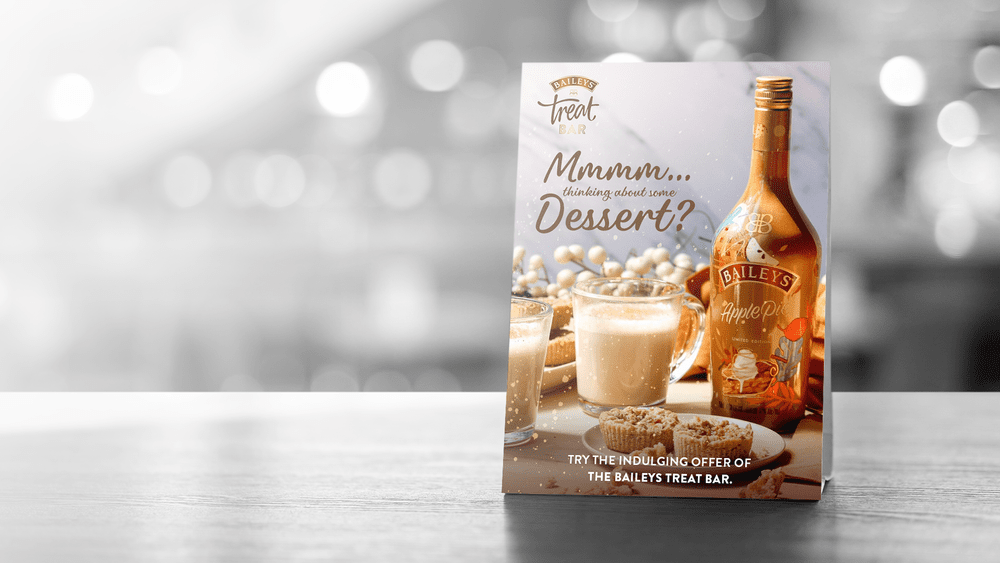
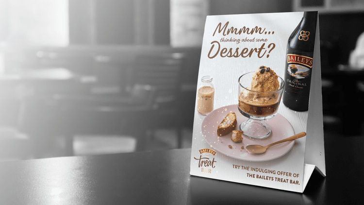
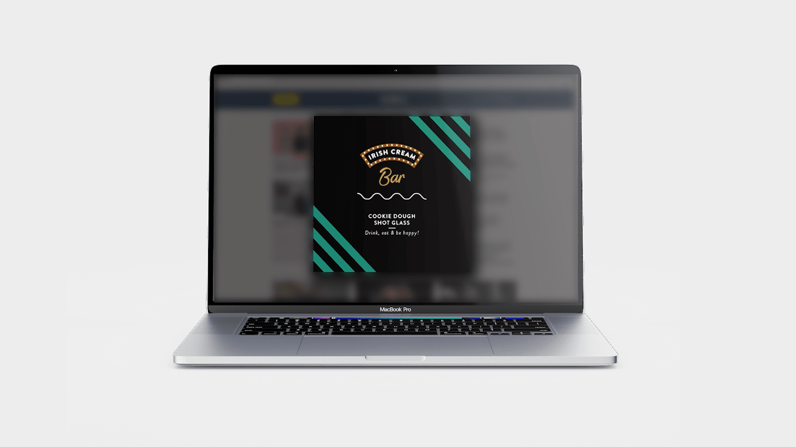